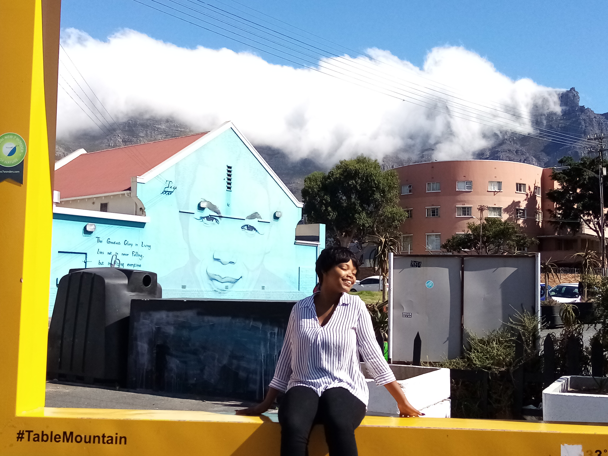
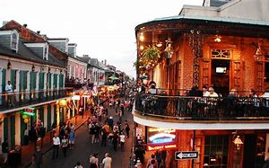

Melissa Jacobs

Which City?
New Orleans

One of my favourite series called The Originals was shot in New Orleans and that's where I just fell in love with the place. New Orleans is a city full life and from what I've heard the atmosphere is just amazing. New Orleans has the most chilling yet fascinating history from Voodoo to the haunted St. Louis Cemetery No. 1 where the Voodoo queen Marie Laveau's remains are.
Foreign Language
| Phrase in French | Phrase in English |
|---|---|
| Ça roule? -Comme d’hab! | How’s life? Good? |
| N’importe quoi! | whatever |
| Ça te dit?/Ça vous dit? | You up for it? |
| Tiens-moi au courant! | Keep me up to date! | c’est pourri ! | that’s terrible! |
The Castle of Good Hope
- The Castle was built by soldiers, volunteers, slaves and Khoi undergoing punishment between 1666 and 1679
- The Castle has never been attacked instead it was used to announce time, warn citizens in case of danger since it could be heard 10km away
- Yellow paint was originally chosen for the walls because it reduced the effects of the hot African sun
The City Hall

- In August 1900 the mayor of Cape Town laid the first corner stone of the City Hall
- It's the first place where Nelson Mandela spoke after being released from prison in 1990
- On July 24th 2018 a statue of Nelson Mandela on the City Hall balcony overlooking the Grand Parade was unveiled
Iziko Slave Lodge
- The Slave Lodge was built in 1679 making it one of South Africa's oldest buildings
- The Slave Lodge housed the slaves who belonged to the Dutch East India Company
- It was used as a slave lodge until 1811